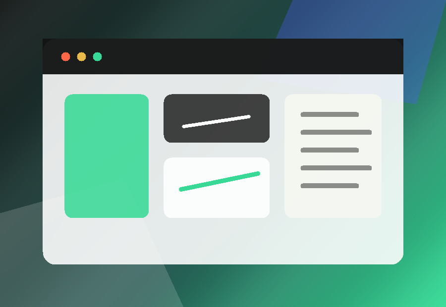
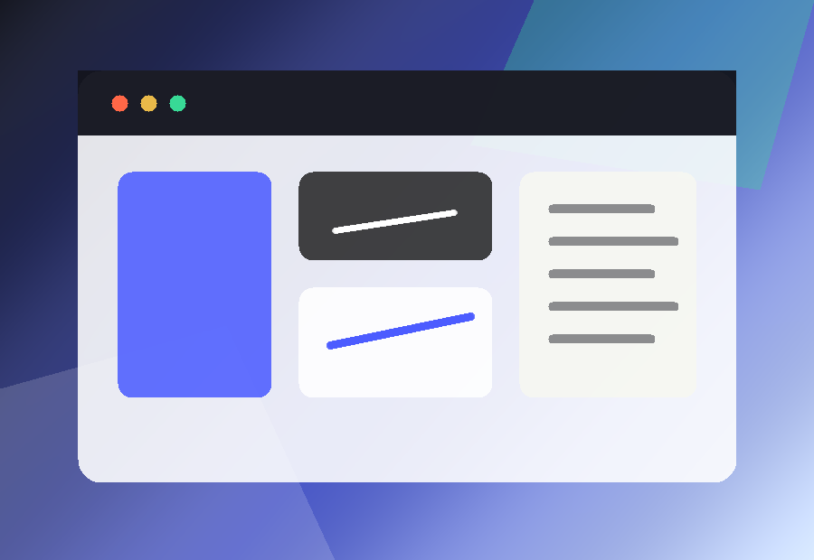
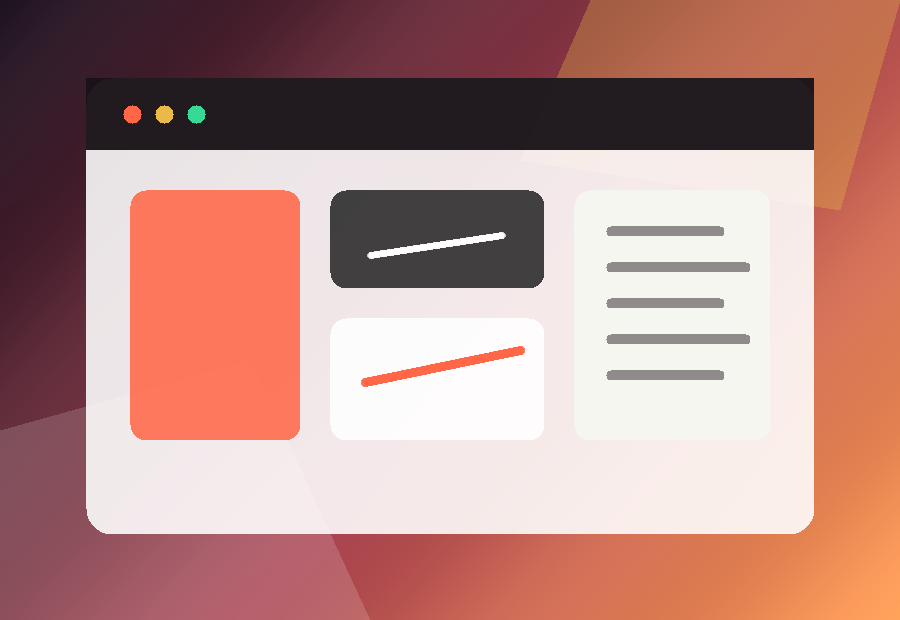

Landing pages e sites
Páginas para apresentar serviços, captar interesse e transmitir confiança com visual limpo e navegação direta.
Portfólio Web
Desenvolvedor Web & UX/UI Designer em formação
Crio interfaces digitais simples, bonitas e funcionais para landing pages, sites institucionais e produtos web.
Sobre
Sou estudante de Análise e Desenvolvimento de Sistemas, com foco em desenvolvimento web, design de interfaces e soluções digitais. Gosto de entender o problema do cliente, organizar o fluxo da experiência e transformar ideias em produtos claros, responsivos e fáceis de usar.
Minha combinação principal é desenvolvimento, olhar de produto e comunicação com pessoas. Isso me ajuda a criar páginas que explicam bem uma ideia, conduzem o visitante e deixam o projeto pronto para evoluir.
Atuação
Páginas para apresentar serviços, captar interesse e transmitir confiança com visual limpo e navegação direta.
Organização de telas, fluxos, requisitos, conteúdo e decisões de produto para reduzir ruído antes do código.
Interfaces, formulários, consumo de APIs e pequenas rotinas que ajudam negócios e projetos acadêmicos a funcionar melhor.
Projetos
Uma seleção para mostrar como organizo a experiência, penso nos estados da interface e conecto a parte visual com funcionalidades reais.

React Native + Expo
Aplicativo com listagem de filmes e séries, busca por título ou gênero, favoritos, tela de detalhes, cadastro validado e integração com JSON Server via Axios.

PHP + UX Writing
Site de apresentação profissional com narrativa pessoal, currículo em PDF, projetos selecionados, stack e formulário validado.

Landing pages
Estrutura preparada para apresentar serviços, vitrines compactas, formulários de interesse e páginas institucionais.
Formação
Formação na UniFAP, com foco no crescimento em tecnologia, desenvolvimento e criação de soluções digitais.
Certificação voltada a experiência do usuário, interfaces, pesquisa, organização de telas e decisões de design.
Atuação com documentação, UX, gestão no Trello e alinhamento de entregas junto ao time.
Experiência com atendimento em escritório de advocacia, desenvolvendo escuta, clareza e trato com diferentes perfis.
Stack
Processo
Mapeio objetivo, público, conteúdo essencial e o problema que a interface precisa resolver.
Transformo ideias soltas em seções, fluxos e prioridades visuais antes da implementação.
Desenvolvo a página ou aplicação com estrutura limpa, responsividade e interações úteis.
Reviso clareza, estados, espaçamento, navegação e detalhes que deixam a entrega mais profissional.
Contato
Estou disponível para conversar sobre landing pages, sites institucionais, UX/UI e soluções digitais simples.